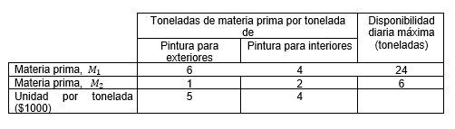
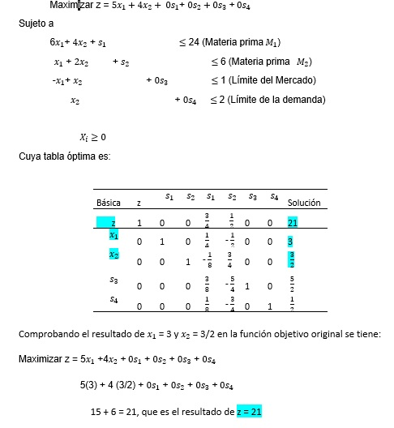
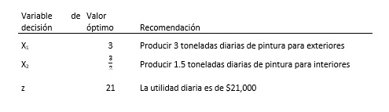
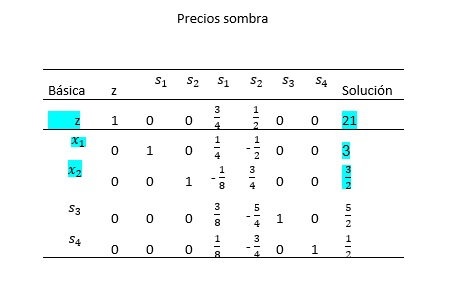

3.2 Solución dual óptima a partir de la solución óptima del problema primal.
Ejemplo 1. Reddy Mikks: produce pinturas para interiores y exteriores con dos materias primas, M1 y M2 . La siguiente tabla muestra los datos básicos del problema [4].

Elaboración propia
Según una encuesta de mercado indica que la demanda diaria de pintura para interiores no puede exceder la pintura para exteriores en más de 1 tonelada. Asimismo, la demanda diaria máxima de pintura para interiores es de 2 toneladas.
Se desea obtener la combinación óptima de las dos pinturas para maximizar su utilidad diaria total.
Al plantear el modelo de programación lineal al problema se tiene:

Elaboración propia
Por lo tanto, la solución óptima es:

Elaboración propia
Si se obtiene su problema dual se tiene:
Minimizar F = 24Y1+6Y2+ Y3+2y4
Sujeto a:
6Y1+Y2- Y3+ 0y4≥5 (toneladas de pintura para exteriores)
4Y1+2Y2+ Y3+ y4≥4 (toneladas de pintura para interiores)
Yi≥0
Donde:
Y1 = Precio por unidad de materia prima M1.
Y2 = Precio por unidad de materia prima M2.
Y3 = Precio por unidad de límite de mercado.
y4 = Precio por unidad de límite de demanda.
La misma tabla óptima del primal provee los valores de las variables duales o precios sombra:

Elaboración propia
Por lo tanto, el resultado tanto de Max Z = 21 y Min F = 21
Donde:
Y1= ¾ siendo lo más que se está dispuesto a pagar por una unidad adicional materia prima M1 son $3/4.
Y2 = ½ siendo lo más que se está dispuesto a pagar por una unidad adicional materia prima M2 son $1/2.
Y3 = 0 no se está dispuesto a pagar ninguna cantidad adicional por ser un recurso abundante.
Y3 = 0 no se está dispuesto a pagar algo por una unidad adicional por ser un recurso abundante.
y4 = 0 no se está dispuesto a pagar algo por una unidad adicional por ser un recurso abundante.